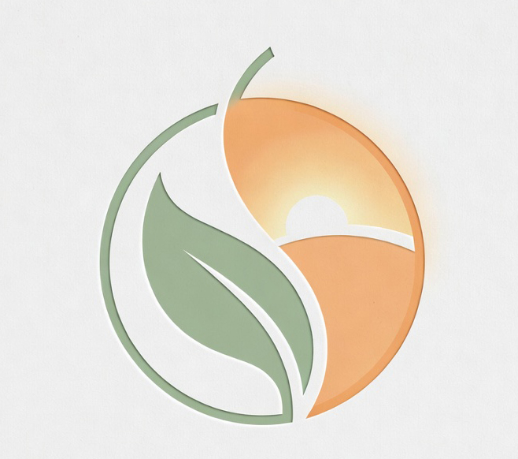

醫學的嚴謹，照護的溫煦。
在這裡，我們聽見身體與心靈的需要。
全人醫療 ｜ 心理諮商 ｜ 長期照顧 — 成為您與家人最安心的健康後盾。
探索照護服務
品牌理念(BRAND CONCEPT)
煦色照護，和煦如初
「煦」是冬日裡初升的暖陽，溫柔而不炙熱；「和」是身心靈回歸平衡的舒適狀態。
我們相信，醫療不該只是冰冷的診斷與藥方，而是一場充滿溫度的陪伴。煦和醫療體系結合了嚴謹的實證醫學、深度同理的心理諮商，以及尊嚴尊重的長照關懷。我們聽見身體的抗議，更懂心靈的疲憊，致力於為您打造一個像家一樣安心的療癒港灣。
嚴謹醫學
全人同理
奢華療癒

專業引路 ｜ 溫暖照護
服務項目一
專業醫療 ｜ 嚴謹致遠
我們以實證醫學為核心，結合先進設備與資深醫療團隊，為您的健康嚴格把關。每一次診斷，都是對生命的尊重。
服務項目二
心理諮商 ｜ 溫柔接住
在完全隱私、安全的空間裡，由專業心理師陪你梳理情緒的結。在這裡，你可以放心脆弱，我們會好好接住你。
服務項目三
長照服務 ｜ 煦煦相伴
延伸家的溫暖，轉化照顧的重擔。我們提供在地化、尊嚴化的長照媒合與居家護理，讓安心成為日常生活。